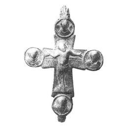

Catalog › CE-0230 · KOR2003-I.1.14
Valvă de față de encolpion cu capete drepte și medalioane rotunde, Răstignire cu nimb cruciform
sec. XI–XII (?) (1001–1200) · loc necunoscut · Muzeul Național de Istorie al Ucrainei, Kiev, inv. В-943
single valve of a reliquary cross, aramă; c. XI–XII (?) (1001–1200); find spot unknown; kept at Muzeul Național de Istorie al Ucrainei, Kiev.


Identificare
- Categorie
- Valvă izolată
- Material
- Aramă
- Tehnică
- Turnare în relief; Gravare (incizie)
- Dimensiuni
- Î 115 × L 90 mm
Iconografie
- Avers
- Sf. Ioan; Neidentificat
- Descriere avers
- Valvă de față de encolpion cu capete drepte, ușor lărgite, completate cu medalioane rotunde. Planul principal al crucii este ocupat de imaginea în relief a lui Hristos răstignit, cu traversa lemnului crucii evidențiată printr-o linie adâncită, nimb cruciform, tăbliță abia schițată și suppedaneum clar exprimat. În medalioanele încadrate cu borduri netede joase sunt imagini bust în relief ale sfinților: pe laturi adstanții Maica Domnului și Sf. Ioan Evanghelistul, sus un arhanghel, jos, probabil, Sf. Ioan Botezătorul. Reliefurile sunt șterse. Inscripții grecești făcute cu linii adâncite (incizate?), încurcate, păstrate sub mâinile lui Hristos: НДVН/НМІТІР НДОVОV/ОС[О]V (încercare de reproducere a fragmentului din Evanghelia lui Ioan XIX, 26–27 „iată fiul tău”, „iată mama ta”); în medalioane, lângă imaginea Maicii Domnului numai urme de litere, lângă Sf. Ioan Evanghelistul – HOAHN, în medalionul de jos – I C[ПРО].
- Inscripții
- НДVН/НМІТІР НДОVОV/ОС[О]V; HOAHN; I C[ПРО]
- Limba
- Greacă
Datare și atribuire
- Datare
- sec. XI–XII (?) (1001–1200)
- Centru
- Necunoscut
- Tipologie
- Korzukhina–Peskova 2003, tip I 1
Descoperire
- Context
- Colecție (fără context)
Păstrare și referințe
- Colecție
- Muzeul Național de Istorie al Ucrainei, Kiev
- Nr. inventar
- В-943
- Bibliografie
- G. F. Korzukhina, A. A. Peskova, Древнерусские энколпионы. Нагрудные кресты-реликварии XI–XIII вв., Sankt-Petersburg, 2003 [Korzukhina–Peskova 2003], p. 47, cat. nr. I 1/14, reprodusă la Табл. 6 (planșe, p. 248). Bibliografie citată în sursă: Ханенко 1899, табл. II, № 36; Корзухина, архив ф. 77, д. 15, л. 9.
- Figura
- Табл. 6
- Planșe
- Korzukhina–Peskova 2003, Табл. 6 (planșă fără paginație proprie în PDF; p. 248 tipărită)
- Observații
- Datare după Peskova: sec. XI–XII (?). Dimensiuni: h 14 cm cu balamalele. Răstignirea: tipul de veșmânt nespecificat. Coordonate: nu sunt date în sursă.
Citare: Corpus Encolpiorum, CE-0230, Valvă de față de encolpion cu capete drepte și medalioane rotunde, Răstignire cu nimb cruciform, https://vitaliejosanu1979-ux.github.io/primul-meu-proiect/piese/KOR2003-I.1.14/ (accesat 2026-10-17).